## inter-process communication | **IPC** ## **operating systems** ### csci 3411 ### Prof. **Sibin Mohan** <br> _<font size="5"> acknowledgments: some content modified from Silberschatz et al. and West</font>_ --- ## process cooperation --- <scb>fork/exit/wait</scb> → **simple** cooperation --- <scb>fork/exit/wait</scb> → **simple** cooperation - create children --- <scb>fork/exit/wait</scb> → **simple** cooperation - create children - block, waiting for them to finish --- ...but how much **data** can a child pass back? --- ### process cooperation | **not enough data** <scb>exit()</scb> → <scb>wait()</scb> passes a **single integer** <p>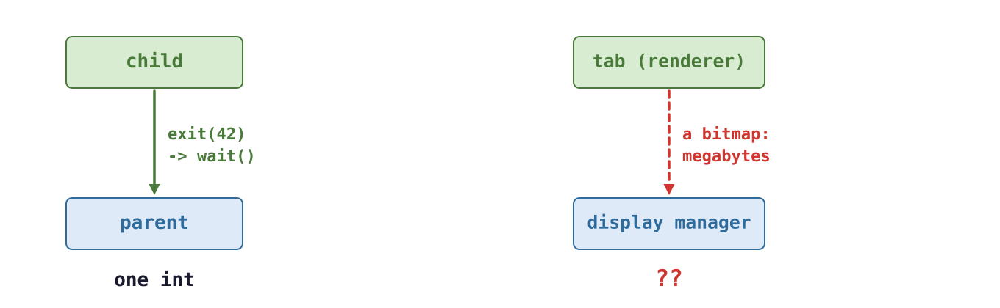</p> --- ### process cooperation | **not enough data** <scb>exit()</scb> → <scb>wait()</scb> passes a **single integer** - browser tab → sends **megabytes** of rendered pixels - ...to display process! --- ### process cooperation | **beyond <scb>fork</scb>/<scb>wait</scb>** need **other** means for process coordination --- ### process cooperation | **beyond <scb>fork</scb>/<scb>wait</scb>** need **other** means for process coordination 1. can you think of situations where this would be _useful_? --- ### process cooperation | **beyond <scb>fork</scb>/<scb>wait</scb>** need **other** means for process coordination 1. can you think of situations where this would be _useful_? 2. is **all** <sc>ipc</sc> via <scb>fork/wait</scb>? --- ## process cooperation | **examples** --- ### process cooperation | **examples** **modern browsers** → one process _per tab_ <p>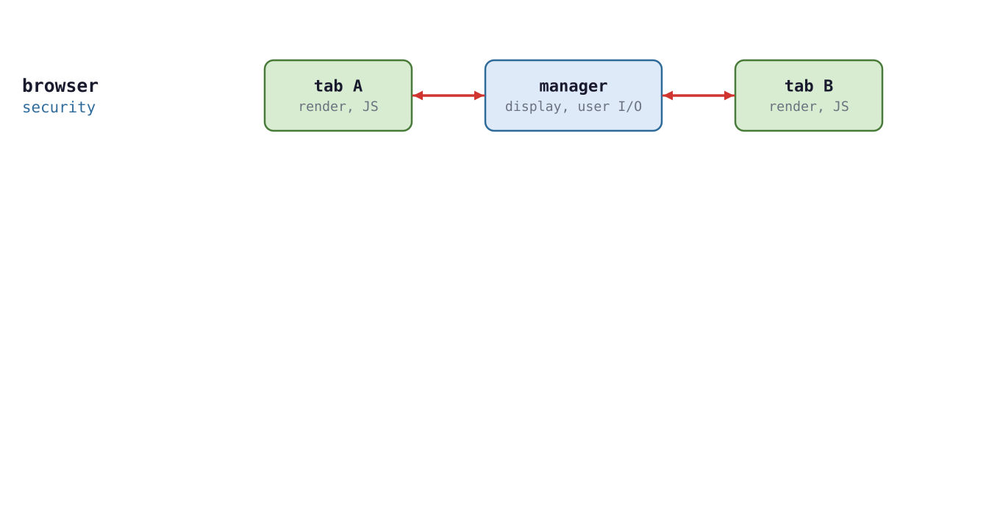</p> --- ### process cooperation | **examples** **modern browsers** → one process _per tab_ - why? **security** - don't put banking tab in same process as malicious page! --- ### process cooperation | **examples** **web servers**: - separate processes - **security/composition** <p>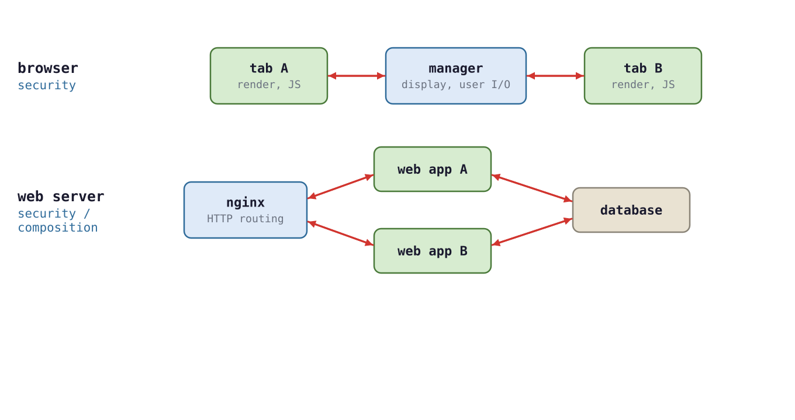</p> --- ### process cooperation | **examples** **the shell**: - <scb>cat /proc/self/maps | grep libc</scb> - **composition** <p>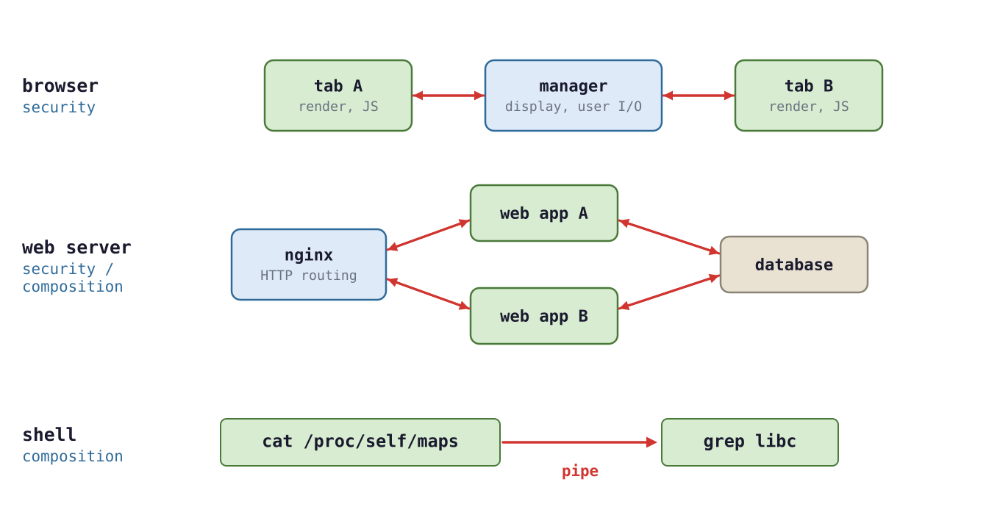</p> --- ### process cooperation | **examples** **the shell**: - <scb>cat /proc/self/maps | grep libc</scb> - **composition** every <font color="darkred">red</font> arrow → **IPC** --- ## why cooperate? --- ### **concurrency** execution **order** of processes is **not predetermined** --- ### **concurrency** execution **order** of processes is **not predetermined** - multiple concurrently executing apps --- ### **concurrency** execution **order** of processes is **not predetermined** - multiple concurrently executing apps - coordination between **I/O bound** processes --- ### **concurrency** execution **order** of processes is **not predetermined** - multiple concurrently executing apps - coordination between **I/O bound** processes - _e.g._ bittorrent, video streaming --- ### **parallelism** multi-processor systems → processes execute **at the same time** --- ### **parallelism** multi-processor systems → processes execute **at the same time** - multiple processes executing **in parallel** --- ### **parallelism** multi-processor systems → processes execute **at the same time** - multiple processes executing **in parallel** - how can a **single** application use a **multicore** machine? --- how can a **single** application use a **multicore** machine? split into **multiple processes**... --- how can a **single** application use a **multicore** machine? split into **multiple processes**...that **must communicate**! --- ### concurrency vs. parallelism --- ### concurrency vs. parallelism ||| |-----|-----| |**concurrency** | processes **interleave** on **one** core | || <p>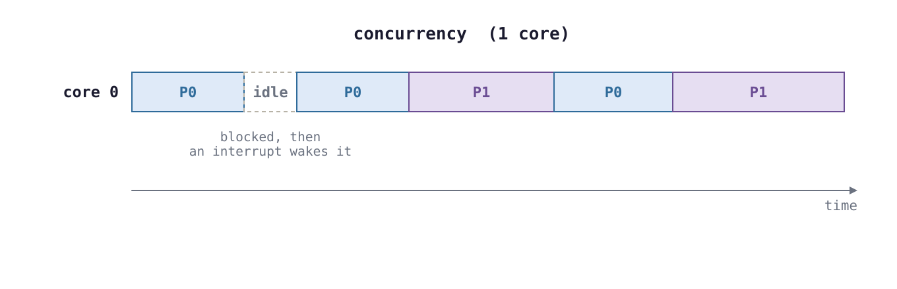</p> --- ### concurrency vs. parallelism ||| |-----|-----| |**concurrency** | processes **interleave** on **one** core | || - <scb>P0</scb> blocks (I/O) → core idles - **interrupt** wakes <scb>P0</scb> --- ### concurrency vs. parallelism ||| |-----|-----| |**concurrency** | processes **interleave** on **one** core | || - <scb>P0</scb> blocks (I/O) → core idles - **interrupt** wakes <scb>P0</scb> - interrupts → make concurrency possible! --- ### concurrency vs. parallelism ||| |-----|-----| |**concurrency** | processes **interleave** on **one** core | | **parallelism** | processes run at **same instant** <br> on **different cores** | || <p>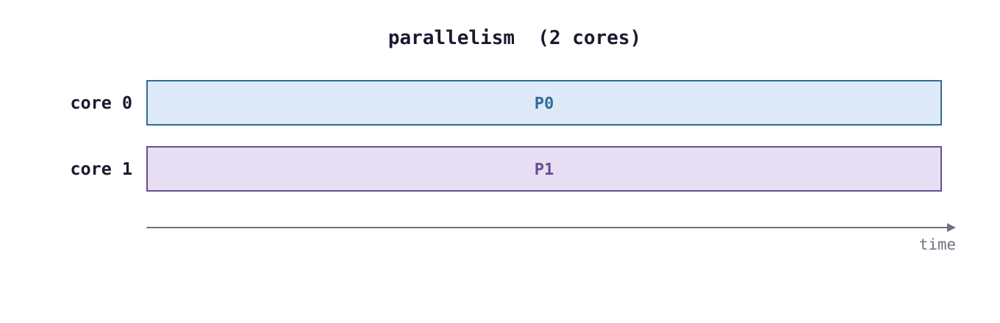</p> --- ### concurrency vs. parallelism ||| |-----|-----| | **parallelism** | processes run at **same instant** <br> on **different cores** | || amount of parallelism → limited by **number of cores**! --- real systems → **both** ||| |-----|-----| |**concurrency** | processes **interleave** on **one** core | | **parallelism** | processes run at **same instant** <br> on **different cores** | || <p>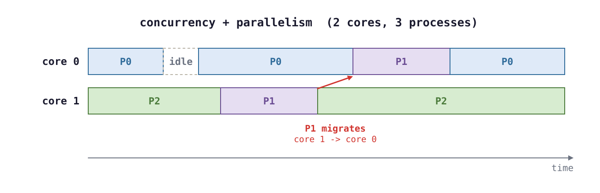</p> --- real systems → **both** - process can run on one core, later on another <br> <br> ### process **migration** Note: - Linux load-balances processes across cores; in xv6 any core's scheduler can pick any runnable process. --- ### process **migration** - linux and other modern OSes do this - xv6 **does not** --- ## inter-process communication (IPC) --- **exchange** information/data between processes --- **exchange** information/data between processes | process | call | |---|---| | A | <scb>int send(int pid, void *msg, int len)</scb> | --- **exchange** information/data between processes | process | call | |---|---| | A | <scb>int send(int pid, void *msg, int len)</scb> | | B | <scb>int recv(int pid, void *msg, int len)</scb> | || --- ### two **core** questions --- ### two **core** questions | question | options | |---|---| | **data transfer** | _message passing_ vs. _shared memory_ | --- ### two **core** questions | question | options | |---|---| | **data transfer** | _message passing_ vs. _shared memory_ | | **synchronization** | _blocking/synchronous_ vs. _non-blocking/asynchronous_ | || --- ## message passing --- ### message passing conceptually → just **copy** <scb>A</scb>'s message into <scb>B</scb>'s buffer --- ### message passing conceptually → just **copy** <scb>A</scb>'s message into <scb>B</scb>'s buffer <p>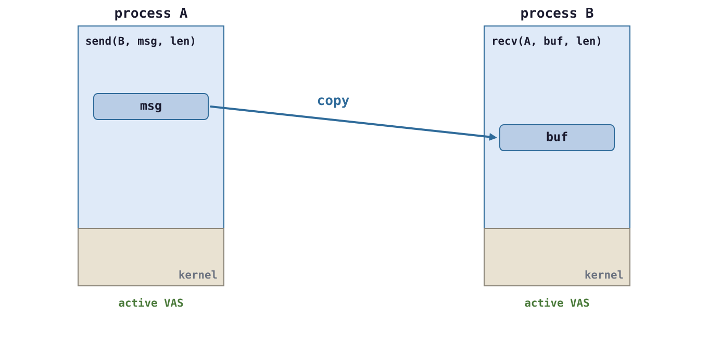</p> --- ### message passing conceptually → just **copy** <scb>A</scb>'s message <scb>B</scb>'s buffer - high addresses at **bottom** - kernel mapped _identically_ into every VAS --- but... **what** copies the data? --- ### message passing | **who copies?** what has access to **both** buffers, **at the same time**? --- ### message passing | **who copies?** what has access to **both** buffers, **at the same time**? <p>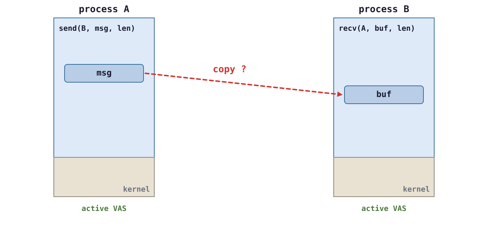</p> --- <center><div class="center" data-id="box" style="height: 75px; width: 250px; background: orange;"> <b>nothing!</b> </div></center> --- ### message passing | **who copies?** - only **one** VAS active at a time --- ### message passing | **who copies?** - only **one** VAS active at a time - but **kernel** is mapped into **all** of them! --- ### message passing 1. copy <scb>A</scb>'s message into **kernel buffer** <p>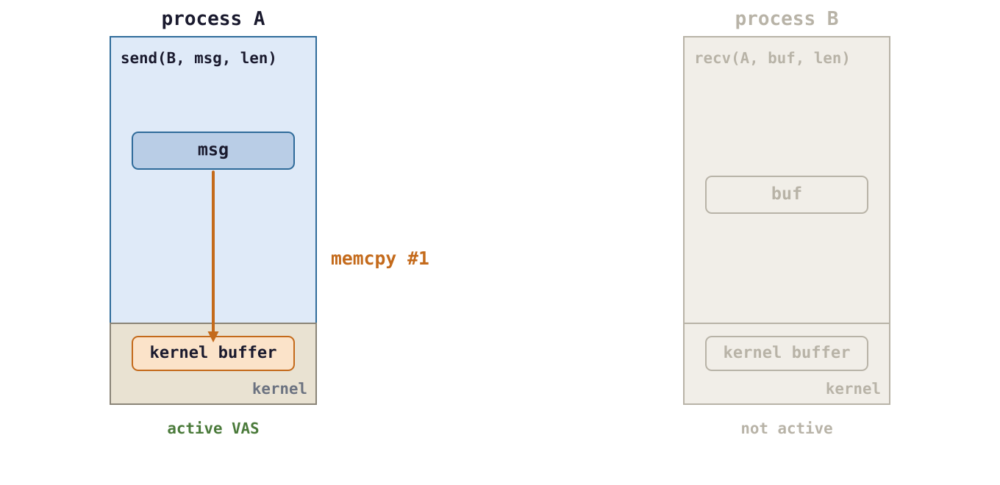</p> --- ### message passing 2. scheduler **switches** VAS (<scb>A</scb> → <scb>B</scb>) <p>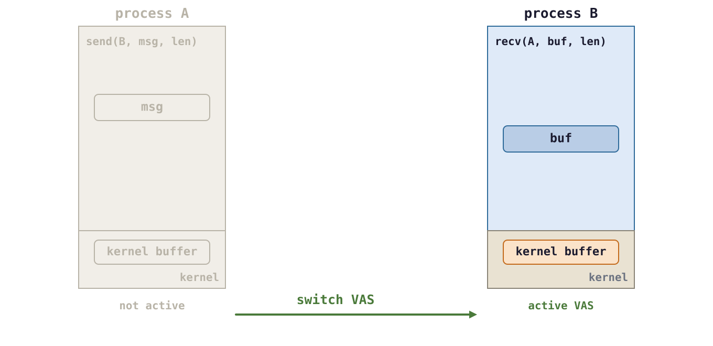</p> --- ### message passing 2. scheduler **switches** VAS (<scb>A</scb> → <scb>B</scb>) - kernel buffer **still there** --- - kernel buffer **still there** <br> <br> --- - kernel buffer **still there** - **same** kernel memory in every VAS --- - switch happens when, - <scb>A</scb> blocks or - its timeslice ends (timer interrupt) --- ### message passing 3. copy kernel buffer → <scb>B</scb>'s buffer <p>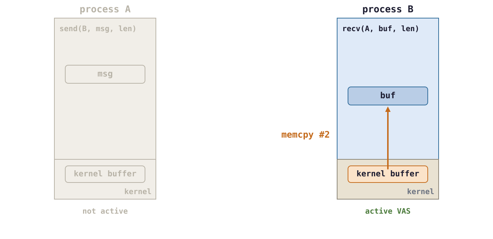</p> --- ### message passing | **cost** - **two** <sc>memcpy</sc>s per message --- ### message passing | **cost** - **two** <sc>memcpy</sc>s per message - kernel must **buffer** data --- ### message passing | **cost** - **two** <sc>memcpy</sc>s per message - kernel must **buffer** data - kernel memory is **not** infinite! --- ## pipes --- ### pipes | **message passing you've used** --- ### pipes | **message passing you've used** ### <scb>cat foo.txt | wc -l</scb> --- ### pipes | **message passing you've used** <scb>cat foo.txt | wc -l</scb> | process | file descriptor | |---|---| | <scb>cat</scb> | **writes** to <scb>fd 1</scb> (stdout) | --- ### pipes | **message passing you've used** <scb>cat foo.txt | wc -l</scb> | process | file descriptor | |---|---| | <scb>cat</scb> | **writes** to <scb>fd 1</scb> (stdout) | | <scb>wc</scb> | **reads** from <scb>fd 0</scb> (stdin) | || --- pipe → a **buffer in kernel** --- pipe → a **buffer in kernel** <scb>cat foo.txt | wc -l</scb> <div class="multicolumn" style="display: grid; grid-template-columns: 60% 40%; gap: 20px; align-items: center;"> <div> | process | file descriptor | |---|---| | <scb>cat</scb> | **writes** to <scb>fd 1</scb> (stdout) | | <scb>wc</scb> | **reads** from <scb>fd 0</scb> (stdin) | || </div> <div> <p>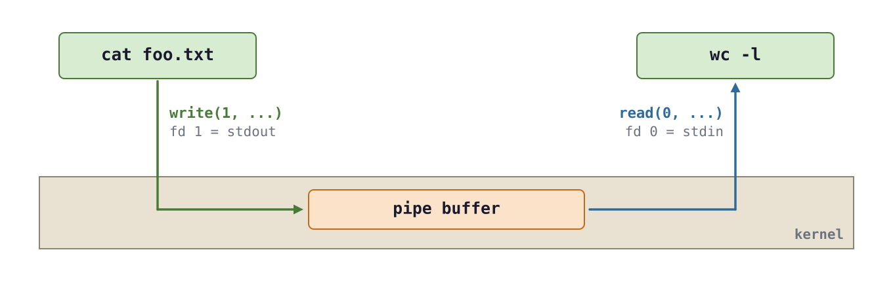</p> </div> </div> --- ### pipes | **API** - two **file descriptor** endpoints --- ### pipes | **API** - two **file descriptor** endpoints - one for **read**, one for **write** --- ### pipes | **API** - two **file descriptor** endpoints - one for **read**, one for **write** - **inherited** across <scb>fork()</scb> --- let's look at a `code` example --- ### pipes | **API** ```C int fds[2]; pipe(fds); if (fork()) { // parent close(fds[1]); read(fds[0], ...); } else { // child close(fds[0]); write(fds[1], ...); } ``` --- ### pipes | **API** ```C [1-2|3|4-5|6|7-8] int fds[2]; pipe(fds); if (fork()) { // parent close(fds[1]); read(fds[0], ...); } else { // child close(fds[0]); write(fds[1], ...); } ``` --- ### pipes | **the API** ```C int fds[2]; pipe(fds); if (fork()) { // parent close(fds[1]); read(fds[0], ...); } else { // child close(fds[0]); write(fds[1], ...); } ``` --- ### pipes | **the API** ||| |----------|----------| | <p>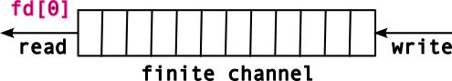</p>| read | | <p>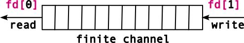</p>| write| || --- ### pipes | **API** <p>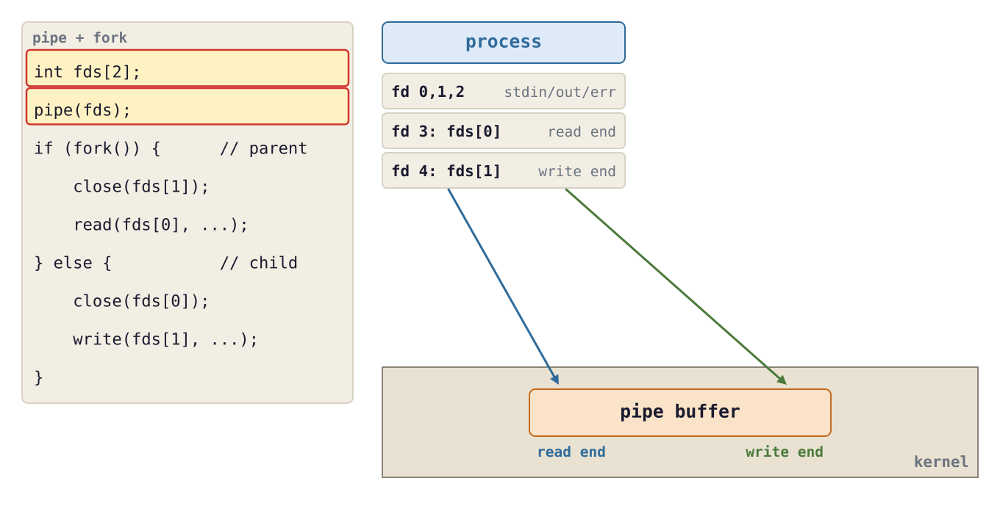</p> --- ### pipes | **API** <scb>fork()</scb> → child gets **copies** of both descriptors <p>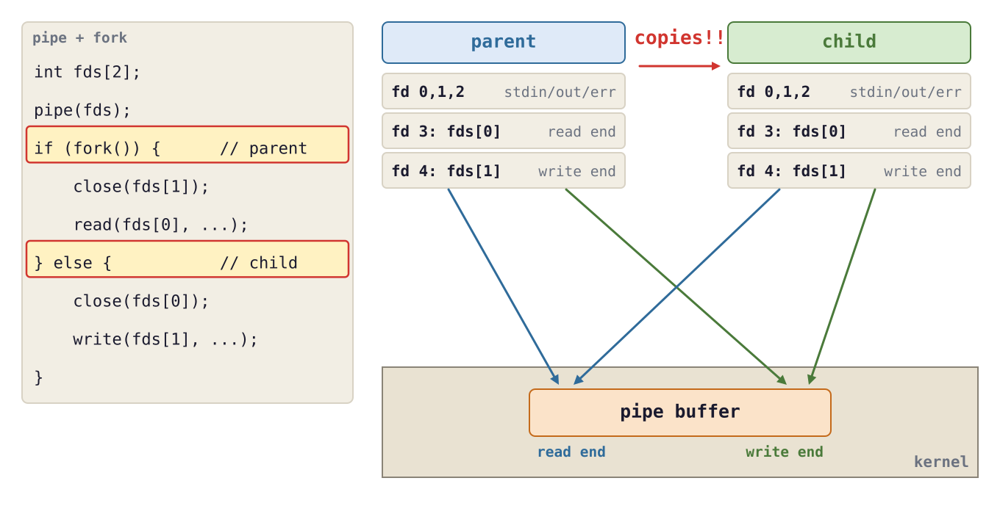</p> --- ### pipes | **API** <scb>fork()</scb> → child gets **copies** of both descriptors **same** pipe, referenced from **both** processes --- ### pipes | **API** each side <scb>close()</scb>s the end it doesn't use <p>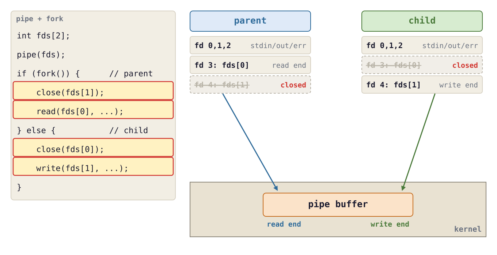</p> --- ### pipes | **API** each side <scb>close()</scb>s the end it doesn't use - child **writes**, parent **reads** - loop → move **any** amount of data! --- how does the **shell** set up <scb>cat foo.txt | wc -l</scb>? --- ### <scb>xv6</scb> | **how the shell builds a pipe** <scb>sh.c</scb> ```C case PIPE: pcmd = (struct pipecmd*)cmd; if(pipe(p) < 0) panic("pipe"); if(fork1() == 0){ close(1); dup(p[1]); close(p[0]); close(p[1]); runcmd(pcmd->left); } if(fork1() == 0){ close(0); dup(p[0]); close(p[0]); close(p[1]); runcmd(pcmd->right); } close(p[0]); close(p[1]); wait(); wait(); break; ``` --- ### <scb>xv6</scb> | **how the shell builds a pipe** <scb>sh.c</scb> ```C [3-4|5-11|6-7|12-18|13-14|19-20|21-22] case PIPE: pcmd = (struct pipecmd*)cmd; if(pipe(p) < 0) panic("pipe"); if(fork1() == 0){ close(1); dup(p[1]); close(p[0]); close(p[1]); runcmd(pcmd->left); } if(fork1() == 0){ close(0); dup(p[0]); close(p[0]); close(p[1]); runcmd(pcmd->right); } close(p[0]); close(p[1]); wait(); wait(); break; ``` --- ### <scb>xv6</scb> | **how the shell builds a pipe** <scb>sh.c</scb> ```C case PIPE: pcmd = (struct pipecmd*)cmd; if(pipe(p) < 0) panic("pipe"); if(fork1() == 0){ close(1); dup(p[1]); close(p[0]); close(p[1]); runcmd(pcmd->left); } if(fork1() == 0){ close(0); dup(p[0]); close(p[0]); close(p[1]); runcmd(pcmd->right); } close(p[0]); close(p[1]); wait(); wait(); break; ``` --- ### <scb>xv6</scb> | **how the shell builds a pipe** | step | what happens | |---|---| | <scb>close(1); dup(p[1])</scb> | left child's **stdout** → pipe's **write** end | --- ### <scb>xv6</scb> | **how the shell builds a pipe** | step | what happens | |---|---| | <scb>close(1); dup(p[1])</scb> | left child's **stdout** → pipe's **write** end | | <scb>close(0); dup(p[0])</scb> | right child's **stdin** → pipe's **read** end | --- ### <scb>xv6</scb> | **how the shell builds a pipe** | step | what happens | |---|---| | <scb>close(1); dup(p[1])</scb> | left child's **stdout** → pipe's **write** end | | <scb>close(0); dup(p[0])</scb> | right child's **stdin** → pipe's **read** end | | <scb>runcmd(...)</scb> | <sc>exec</sc> <scb>cat</scb>/<scb>wc</scb> <br> never know about pipe! | --- ### <scb>xv6</scb> | **how the shell builds a pipe** | step | what happens | |---|---| | <scb>close(1); dup(p[1])</scb> | left child's **stdout** → pipe's **write** end | | <scb>close(0); dup(p[0])</scb> | right child's **stdin** → pipe's **read** end | | <scb>runcmd(...)</scb> | <sc>exec</sc> <scb>cat</scb>/<scb>wc</scb> <br> never know about pipe! | | parent | closes **both** ends <br> <scb>wait()</scb>s for **both** children | || --- ### <scb>xv6</scb> | **how the shell builds a pipe** | step | what happens | |---|---| | <scb>close(1); dup(p[1])</scb> | left child's **stdout** → pipe's **write** end | | <scb>close(0); dup(p[0])</scb> | right child's **stdin** → pipe's **read** end | | <scb>runcmd(...)</scb> | <sc>exec</sc> <scb>cat</scb>/<scb>wc</scb> → never know about pipe! | | parent | closes **both** ends, <scb>wait()</scb>s for **both** children | || - <scb>dup()</scb> → returns **lowest** free fd - <scb>close(1)</scb> then <scb>dup()</scb> → lands on <scb>fd 1</scb> --- ### <scb>xv6</scb> | **inside a pipe** <scb>pipe.c</scb> ```C #define PIPESIZE 512 struct pipe { struct spinlock lock; char data[PIPESIZE]; uint nread; // number of bytes read uint nwrite; // number of bytes written int readopen; // read fd is still open int writeopen; // write fd is still open }; ``` --- ### <scb>xv6</scb> | **inside a pipe** <scb>pipe.c</scb> ```C [1|5|6-7|8-9] #define PIPESIZE 512 struct pipe { struct spinlock lock; char data[PIPESIZE]; uint nread; // number of bytes read uint nwrite; // number of bytes written int readopen; // read fd is still open int writeopen; // write fd is still open }; ``` --- ### <scb>xv6</scb> | **inside a pipe** <scb>pipe.c</scb> ```C #define PIPESIZE 512 struct pipe { struct spinlock lock; char data[PIPESIZE]; uint nread; // number of bytes read uint nwrite; // number of bytes written int readopen; // read fd is still open int writeopen; // write fd is still open }; ``` --- ### <scb>xv6</scb> | **inside a pipe** <scb>data[]</scb> → **ring buffer** in kernel - write at <scb>data[nwrite % PIPESIZE]</scb> --- ### <scb>xv6</scb> | **inside a pipe** <scb>data[]</scb> → **ring buffer** in kernel - write at <scb>data[nwrite % PIPESIZE]</scb> - read from <scb>data[nread % PIPESIZE]</scb> --- ### <scb>xv6</scb> | **inside a pipe** <scb>data[]</scb> → **ring buffer** in kernel - write at <scb>data[nwrite % PIPESIZE]</scb> - read from <scb>data[nread % PIPESIZE]</scb> - **empty** → <scb>nread == nwrite</scb> --- ### <scb>xv6</scb> | **inside a pipe** <scb>data[]</scb> → **ring buffer** in kernel - write at <scb>data[nwrite % PIPESIZE]</scb> - read from <scb>data[nread % PIPESIZE]</scb> - **empty** → <scb>nread == nwrite</scb> - **full** → <scb>nwrite == nread + PIPESIZE</scb> --- ### pipe capacity | **linux vs. xv6** | system | pipe buffer | |---|---| | linux | <scb>64 KiB</scb> (default, see [pipe(7)](https://man7.org/linux/man-pages/man7/pipe.7.html)) | --- ### pipe capacity | **linux vs. xv6** | system | pipe buffer | |---|---| | linux | <scb>64 KiB</scb> (default, see [pipe(7)](https://man7.org/linux/man-pages/man7/pipe.7.html)) | | xv6 | <scb>512</scb> bytes (<scb>PIPESIZE</scb>) | || Note: - the lecture says ~4096 bytes; these are the actual numbers. --- linux | query/resize with... <scb>fcntl(fd, F_GETPIPE_SZ)</scb>/<scb>F_SETPIPE_SZ</scb> --- ### <scb>xv6</scb> | **pipe size** why is xv6's pipe so **small**? --- ### <scb>xv6</scb> | **pipe size** - <scb>pipealloc()</scb> → gets whole <scb>struct pipe</scb> --- ### <scb>xv6</scb> | **pipe size** - <scb>pipealloc()</scb> → gets whole <scb>struct pipe</scb> - from **one** <scb>kalloc()</scb>'d page (<scb>4096</scb> bytes) --- ### <scb>xv6</scb> | **pipe size** - <scb>pipealloc()</scb> → gets whole <scb>struct pipe</scb> - from **one** <scb>kalloc()</scb>'d page (<scb>4096</scb> bytes) - use only a part of it (<scb>512</scb> bytes) --- ### <scb>xv6</scb> | **pipe size** - <scb>pipealloc()</scb> → gets whole <scb>struct pipe</scb> - from **one** <scb>kalloc()</scb>'d page (<scb>4096</scb> bytes) - use only a part of it (<scb>512</scb> bytes) keep it **simple** → a teaching OS! --- ## shared memory --- ### shared memory kernel maps **same physical memory** into both VASes --- ### shared memory kernel maps **same physical memory** into both VASes <p>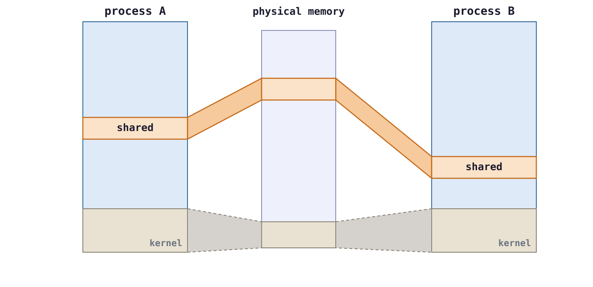</p> --- ### shared memory kernel maps **same physical memory** into both VASes a **store** in <scb>A</scb> → **immediately** seen by **loads** in <scb>B</scb> Note: - possibly at different virtual addresses. on Linux: shm_open + mmap, or mmap(MAP_SHARED). --- ### shared memory | **the kernel** - one **physical** copy - mapped **identically** into every VAS --- ### shared memory | <scb>send</scb>/<scb>recv</scb> <scb>A</scb> <sc>malloc()</sc>s message in its **private** memory... <p>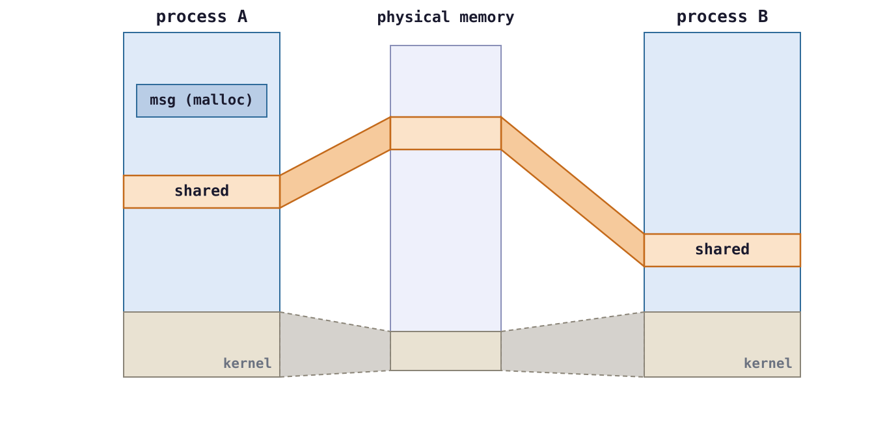</p> --- ### shared memory | <scb>send</scb> - <scb>A</scb> <sc>memcpy</sc> into **shared** region <p>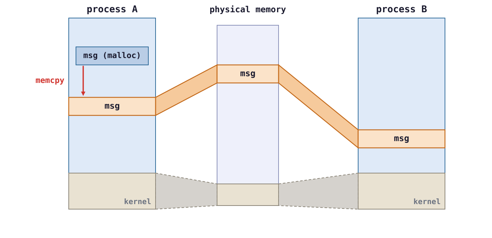</p> --- ### shared memory | <scb>send</scb> - <scb>A</scb> <sc>memcpy</sc> into **shared** region - <scb>B</scb> sees it **instantly** --- ### shared memory | <scb>recv</scb> <scb>B</scb> <sc>memcpy</sc>s it out into its **own** buffer <p>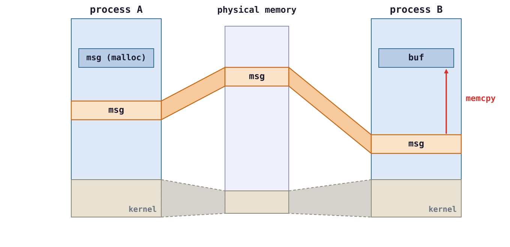</p> --- ### shared memory | <scb>recv</scb> <scb>B</scb> <sc>memcpy</sc>s it out into its **own** buffer <div class="multicolumn" style="display: grid; grid-template-columns: 60% 40%; gap: 20px; align-items: center;"> <div> </div> <div> - still **two** copies! </div> </div> --- ### shared memory | <scb>recv</scb> <scb>B</scb> <sc>memcpy</sc>s it out into its **own** buffer <div class="multicolumn" style="display: grid; grid-template-columns: 60% 40%; gap: 20px; align-items: center;"> <div> </div> <div> - still **two** copies! - ...but **no** <sc>syscall</sc>s </div> </div> --- is shared memory **faster** or **slower** than message passing? --- is shared memory **faster** or **slower** than message passing? - same **two** copies as message passing --- is shared memory **faster** or **slower** than message passing? - same **two** copies as message passing - but **no kernel** involvement --- is shared memory **faster** or **slower** than message passing? - same **two** copies as message passing - but **no kernel** involvement - especially if <scb>A</scb>, <scb>B</scb> run in **parallel** on separate cores --- ### shared memory | **zero copy** --- ### shared memory | **zero copy** - a **special** API - allocate message **inside** shared region --- ### shared memory | **zero copy** - a **special** API - allocate message **inside** shared region <p>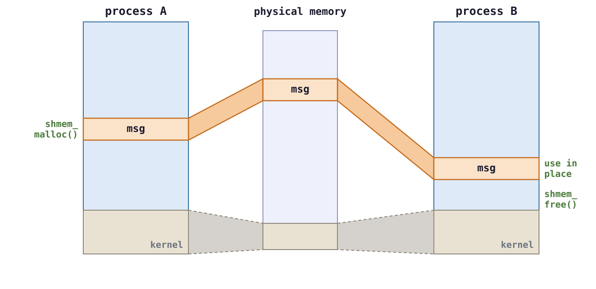</p> --- ### shared memory | **zero copy** | process | call | description | |---|---|----| | <scb>A</scb> | <scb>shmem_malloc()</scb> | build message **in place** <br> (in shared region) | --- ### shared memory | **zero copy** | process | call | description | |---|---|----| | <scb>A</scb> | <scb>shmem_malloc()</scb> | build message **in place** <br> (in shared region) | | <scb>B</scb> | | uses message **in place** | --- ### shared memory | **zero copy** | process | call | description | |---|---|----| | <scb>A</scb> | <scb>shmem_malloc()</scb> | build message **in place** <br> (in shared region) | | <scb>B</scb> | | uses message **in place** | | <scb>B</scb> | <scb>shmem_free()</scb> | release memory when done | || --- ### shared memory | **zero copy** <center><div class="center" data-id="box" style="height: 75px; width: 600px; background: orange;"> <b>no copies, no syscalls!</b> </div></center> --- ### shared memory | **zero copy** <center><div class="center" data-id="box" style="height: 75px; width: 600px; background: orange;"> <b>no copies, no syscalls!</b> </div></center> <br> but existing programs (<scb>read/write</scb>)... <br> ...must be **rewritten**! --- but...what's the **catch**? --- ### shared memory | **cons** - **less isolation** between processes --- ### shared memory | **cons** - **less isolation** between processes - errant store in <scb>A</scb> → **corrupts** <scb>B</scb>'s view! --- ### shared memory | **cons** - **less isolation** between processes - errant store in <scb>A</scb> → **corrupts** <scb>B</scb>'s view! - keep **shared data structures simple** --- | message passing | shared memory | |---|---| | **must** copy data (usually <scb>2x</scb>) | copying data **optional** | --- | message passing | shared memory | |---|---| | **must** copy data (usually <scb>2x</scb>) | copying data **optional** | | **must** involve **kernel** | parallel processes can **avoid** kernel | --- | message passing | shared memory | |---|---| | **must** copy data (usually <scb>2x</scb>) | copying data **optional** | | **must** involve kernel | parallel processes can **avoid** kernel | | **easy** to implement | needs **special** APIs | || --- ## IPC synchronization --- **blocking/synchronous** operations (<sc>send</sc>, <sc>recv</sc>) --- **blocking/synchronous** operations (<sc>send</sc>, <sc>recv</sc>) - process put on a **communication queue** --- **blocking/synchronous** operations (<sc>send</sc>, <sc>recv</sc>) - process put on a **communication queue** - data transferred only when **other** process <br> also <sc>send</sc>s/<sc>recv</sc>s --- ### IPC synchronization | **blocking** **blocking/synchronous** operations (<sc>send</sc>, <sc>recv</sc>) - process put on a **communication queue** - data transferred only when **other** process <br> also <sc>send</sc>s/<sc>recv</sc>s - ...then placed back into **runqueue** --- let's walk through an example... --- ### IPC synchronization | **blocking** 1. <scb>A</scb> calls <scb>recv(m)</scb> → no data yet --- ### IPC synchronization | **blocking** 1. <scb>A</scb> calls <scb>recv(m)</scb> → no data yet <p>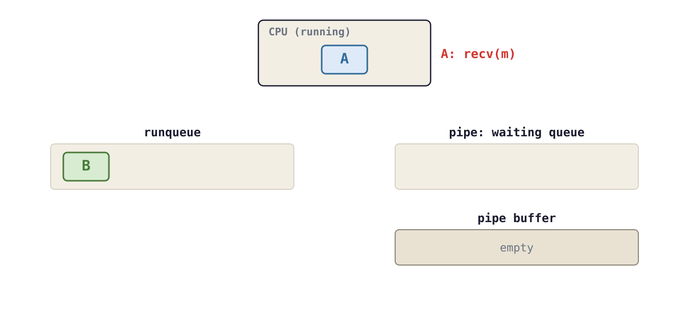</p> --- ### IPC synchronization | **blocking** 2. kernel removes <scb>A</scb> from runqueue → moves to **comm queue** <p>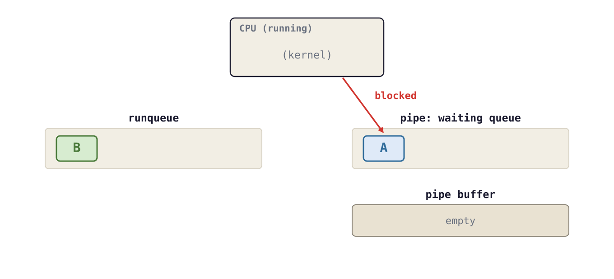</p> --- ### IPC synchronization | **blocking** 3. kernel switches to <scb>B</scb> → __concurrency!__ <p>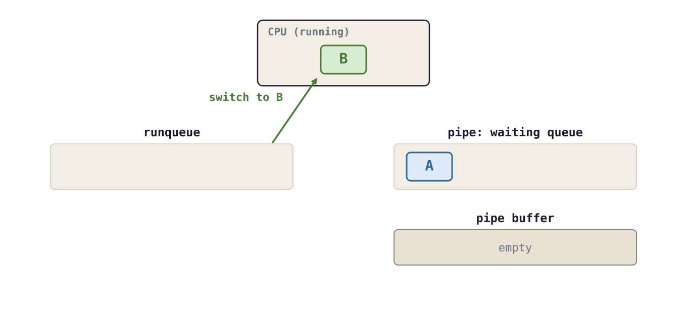</p> --- ### IPC synchronization | **blocking** 4. <scb>B</scb> calls <scb>send(m)</scb> <br> <p>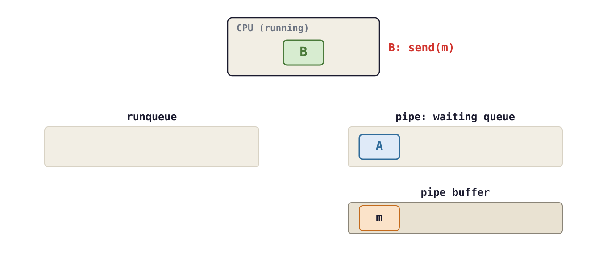</p> --- ### IPC synchronization | **blocking** 4. <scb>B</scb> calls <scb>send(m)</scb> → data in buffer <br> --- ### IPC synchronization | **blocking** 5. kernel sees <scb>A</scb> waiting → back to **runqueue** <p>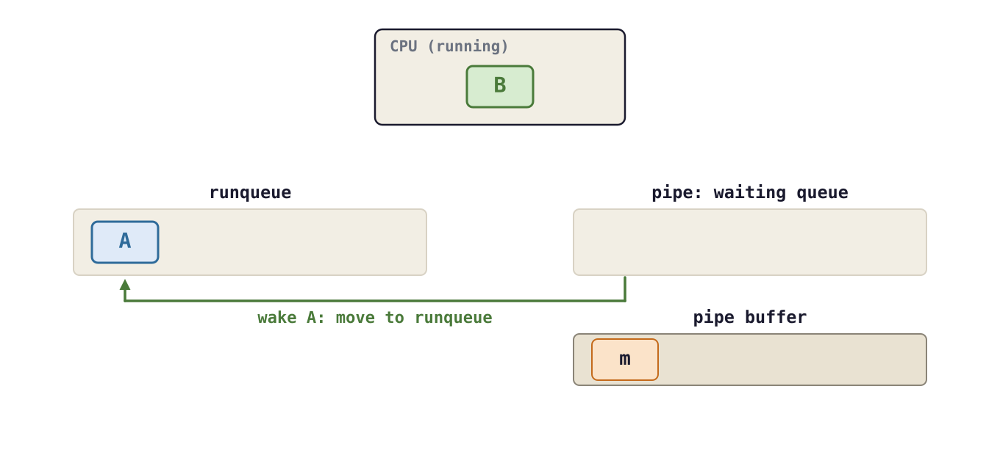</p> --- ### IPC synchronization | **blocking** 6. later, kernel schedules <scb>A</scb> <p>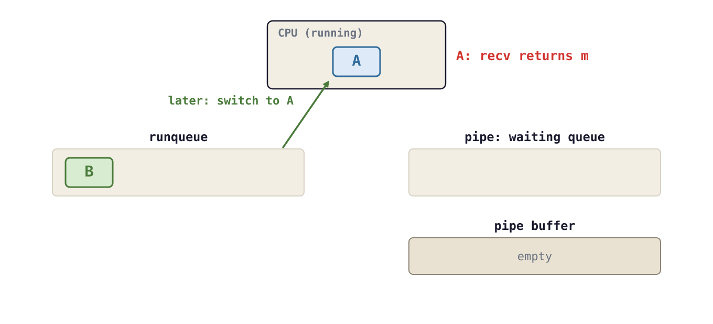</p> (<scb>running</scb> → <scb>blocked</scb> → <scb>ready</scb> → <scb>running</scb>) --- ### IPC synchronization | **blocking** 6. later, kernel schedules <scb>A</scb> 7. copies data up → <scb>recv</scb> returns <scb>m</scb> --- ### IPC synchronization | **blocking** 6. later, kernel schedules <scb>A</scb> 7. copies data up → <scb>recv</scb> returns <scb>m</scb> (<scb>running</scb> → <scb>blocked</scb> → <scb>ready</scb> → <scb>running</scb>) --- ### IPC synchronization | **blocking** <sc>send</sc> can **block** too? --- ### IPC synchronization | **blocking** <sc>send</sc> can **block** too? <br> **yes**! → waiting for a receiver --- ### <scb>xv6</scb> | **blocking pipes** <scb>pipe.c</scb> → <scb>piperead</scb> ```C int piperead(struct pipe *p, char *addr, int n) { int i; acquire(&p->lock); while(p->nread == p->nwrite && p->writeopen){ //DOC: pipe-empty ... sleep(&p->nread, &p->lock); //DOC: piperead-sleep } for(i = 0; i < n; i++){ //DOC: piperead-copy if(p->nread == p->nwrite) break; addr[i] = p->data[p->nread++ % PIPESIZE]; } wakeup(&p->nwrite); //DOC: piperead-wakeup release(&p->lock); return i; } ``` --- ### <scb>xv6</scb> | **blocking pipes** <scb>pipe.c</scb> → <scb>piperead</scb> ```C [6|7|9|11-15|14|16] int piperead(struct pipe *p, char *addr, int n) { int i; acquire(&p->lock); while(p->nread == p->nwrite && p->writeopen){ //DOC: pipe-empty ... sleep(&p->nread, &p->lock); //DOC: piperead-sleep } for(i = 0; i < n; i++){ //DOC: piperead-copy if(p->nread == p->nwrite) break; addr[i] = p->data[p->nread++ % PIPESIZE]; } wakeup(&p->nwrite); //DOC: piperead-wakeup release(&p->lock); return i; } ``` --- ### <scb>xv6</scb> | **blocking pipes** <scb>pipe.c</scb> → <scb>piperead</scb> ```C int piperead(struct pipe *p, char *addr, int n) { int i; acquire(&p->lock); while(p->nread == p->nwrite && p->writeopen){ //DOC: pipe-empty ... sleep(&p->nread, &p->lock); //DOC: piperead-sleep } for(i = 0; i < n; i++){ //DOC: piperead-copy if(p->nread == p->nwrite) break; addr[i] = p->data[p->nread++ % PIPESIZE]; } wakeup(&p->nwrite); //DOC: piperead-wakeup release(&p->lock); return i; } ``` --- ### <scb>xv6</scb> | **blocking pipes** <scb>pipe.c</scb> → <scb>pipewrite</scb> ```C int pipewrite(struct pipe *p, char *addr, int n) { int i; acquire(&p->lock); for(i = 0; i < n; i++){ while(p->nwrite == p->nread + PIPESIZE){ //DOC: pipewrite-full ... wakeup(&p->nread); sleep(&p->nwrite, &p->lock); //DOC: pipewrite-sleep } p->data[p->nwrite++ % PIPESIZE] = addr[i]; } wakeup(&p->nread); //DOC: pipewrite-wakeup1 release(&p->lock); return n; } ``` --- ### <scb>xv6</scb> | **blocking pipes** <scb>pipe.c</scb> → <scb>pipewrite</scb> ```C [8|10|11|13|15] int pipewrite(struct pipe *p, char *addr, int n) { int i; acquire(&p->lock); for(i = 0; i < n; i++){ while(p->nwrite == p->nread + PIPESIZE){ //DOC: pipewrite-full ... wakeup(&p->nread); sleep(&p->nwrite, &p->lock); //DOC: pipewrite-sleep } p->data[p->nwrite++ % PIPESIZE] = addr[i]; } wakeup(&p->nread); //DOC: pipewrite-wakeup1 release(&p->lock); return n; } ``` --- ### <scb>xv6</scb> | **blocking pipes** <scb>pipe.c</scb> → <scb>pipewrite</scb> ```C int pipewrite(struct pipe *p, char *addr, int n) { int i; acquire(&p->lock); for(i = 0; i < n; i++){ while(p->nwrite == p->nread + PIPESIZE){ //DOC: pipewrite-full ... wakeup(&p->nread); sleep(&p->nwrite, &p->lock); //DOC: pipewrite-sleep } p->data[p->nwrite++ % PIPESIZE] = addr[i]; } wakeup(&p->nread); //DOC: pipewrite-wakeup1 release(&p->lock); return n; } ``` --- ### <scb>xv6</scb> | **blocking pipes** | situation | what xv6 does | |---|---| | pipe **empty**, reader arrives | reader <scb>sleep</scb>s on <scb>nread</scb> | --- ### <scb>xv6</scb> | **blocking pipes** | situation | what xv6 does | |---|---| | pipe **empty**, reader arrives | reader <scb>sleep</scb>s on <scb>nread</scb> | | pipe **full**, writer arrives | writer <scb>sleep</scb>s on <scb>nwrite</scb> | --- ### <scb>xv6</scb> | **blocking pipes** | situation | what xv6 does | |---|---| | pipe **empty**, reader arrives | reader <scb>sleep</scb>s on <scb>nread</scb> | | pipe **full**, writer arrives | writer <scb>sleep</scb>s on <scb>nwrite</scb> | | data moved | <scb>wakeup</scb> the **other** side | || --- ### <scb>xv6</scb> | **blocking pipes** | situation | what xv6 does | |---|---| | pipe **empty**, reader arrives | reader <scb>sleep</scb>s on <scb>nread</scb> | | pipe **full**, writer arrives | writer <scb>sleep</scb>s on <scb>nwrite</scb> | | data moved | <scb>wakeup</scb> the **other** side | || <scb>addr[i]</scb> → kernel copies **straight** <br> to/from process' user memory --- <scb>addr[i]</scb> → kernel copies **straight** <br> to/from process' user memory - one copy **in** (<sc>write</sc>), one copy **out** (<sc>read</sc>) - the **two** <sc>memcpy</sc>s of message passing! --- wait... how can kernel touch <scb>addr</scb> → a **user** pointer? --- ### <scb>xv6</scb> | **user pointers** how can kernel touch <scb>addr</scb> → a **user** pointer? - during a <sc>syscall</sc> → **caller's** VAS still active --- ### <scb>xv6</scb> | **user pointers** how can kernel touch <scb>addr</scb> → a **user** pointer? - during a <sc>syscall</sc> → **caller's** VAS still active - kernel mapped into **every** VAS - sees **both** kernel and user memory --- ### <scb>xv6</scb> | **user pointers** but first... check the pointer! - <scb>sys_read()</scb> calls <scb>argptr()</scb> (in <scb>syscall.c</scb>) --- <center><div class="center" data-id="box" style="height: 75px; width: 910px; background: orange;"> <b>blocking IPC = sleep + wakeup!</b> </div></center> --- ### IPC synchronization | **non-blocking**/**asynchronous** --- ### IPC synchronization | **non-blocking** <sc>send</sc> and <sc>recv</sc> **never** block --- ### IPC synchronization | **non-blocking** <sc>send</sc> and <sc>recv</sc> **never** block | call | data/room available? | otherwise | |---|---|---| | <scb>A</scb>: <scb>recv(m)</scb> | return it | return "no data" <br> → keep computing | --- ### IPC synchronization | **non-blocking** <sc>send</sc> and <sc>recv</sc> **never** block | call | data/room available? | otherwise | |---|---|---| | <scb>A</scb>: <scb>recv(m)</scb> | return it | return "no data" <br> → keep computing | | <scb>B</scb>: <scb>send(m)</scb> | queue it (for <scb>A</scb>, later) | return "couldn't send" | || --- ### IPC synchronization | **non-blocking** - real APIs → return <scb>-1</scb> - with <scb>errno = EAGAIN</scb> ("try again") <br> <br> see [read(2)](https://man7.org/linux/man-pages/man2/read.2.html), [write(2)](https://man7.org/linux/man-pages/man2/write.2.html) --- what if <scb>read</scb> returns <scb>0</scb> on a pipe? --- what if <scb>read</scb> returns <scb>0</scb> on a pipe? **end-of-file**! → writer closed it --- <scb>B</scb> sends in an **infinite loop**, <scb>A</scb> **never** receives... --- <scb>B</scb> sends in an **infinite loop**, <scb>A</scb> **never** receives... <center><div class="center" data-id="box" style="height: 75px; width: 250px; background: orange;"> <b>problem?</b> </div></center> --- ### non-blocking | **unbounded sends** B sends in an **infinite loop**, A **never** receives... --- ### non-blocking | **unbounded sends** B sends in an **infinite loop**, A **never** receives... - kernel buffers **every** message - runs **out of memory**! --- ### non-blocking | **unbounded sends** B sends in an **infinite loop**, A **never** receives... - kernel buffers **every** message - runs **out of memory**! - a **denial of service** on kernel memory! --- <center><div class="center" data-id="box" style="height: 75px; width: 685px; background: orange;"> <b>kernel must limit buffer!</b> </div></center> --- <center><div class="center" data-id="box" style="height: 75px; width: 685px; background: orange;"> <b>kernel must limit buffer!</b> </div></center> - **block**, or - return "<scb>no room</scb>" --- ### IPC synchronization | **buffering** --- ### IPC synchronization | **buffering** - channel can buffer <scb>N</scb> items - up to <scb>N</scb> writes **never** block --- ### IPC synchronization | **buffering** - channel can buffer <scb>N</scb> items - up to <scb>N</scb> writes **never** block <p>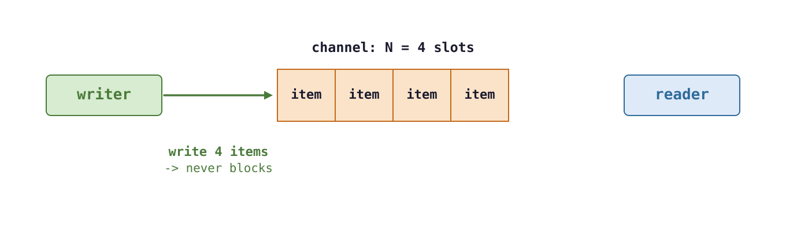</p> --- ### IPC synchronization | **buffering** - write item <scb>N+1</scb> - **now** policy matters - **block**, or return <scb>EAGAIN</scb> <p>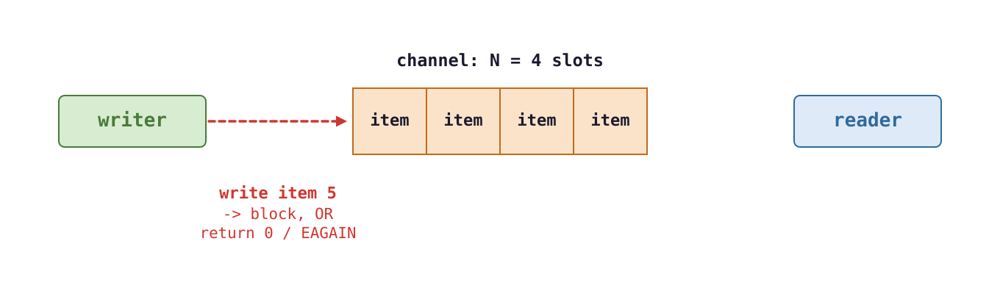</p> --- ### IPC synchronization | **buffering** - channel holds <scb>M</scb> items (<scb>M</scb> ≤ <scb>N</scb>): - reading up to <scb>M</scb> **never** blocks <p>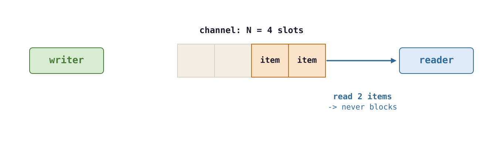</p> --- ### IPC synchronization | **buffering** read item <scb>M+1</scb> → **block**, or return <scb>EAGAIN</scb> <p>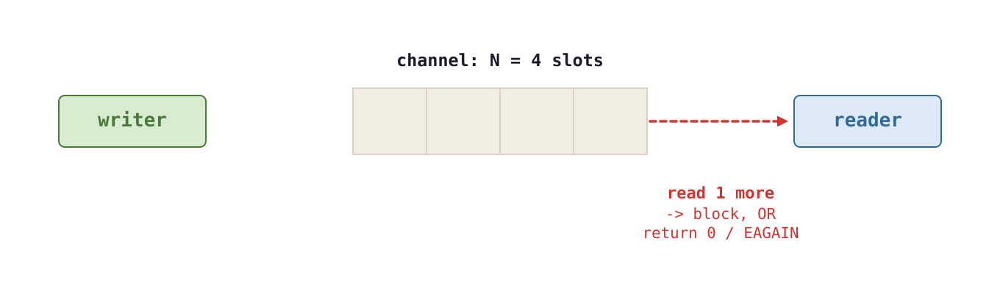</p> --- ### IPC synchronization | **buffering** two extremes... | buffer size | behavior | |---|---| | <scb>N = 0</scb> | normal **blocking** | --- ### IPC synchronization | **buffering** two extremes... | buffer size | behavior | |---|---| | <scb>N = 0</scb> | normal **blocking** | | <scb>N = ∞</scb> | sends **never** block <br> (impossible: infinite memory!) | || <br> in practice → **fixed-size** buffer (_e.g._ <scb>PIPESIZE</scb>) --- ## blocking vs. non-blocking | **code** --- server reading from **two** clients... --- ### **blocking** reads ```C char buf[16]; int ret; // block until data is available if (read(client0, buf, 16) > 0) process_data(buf); if (read(client1, buf, 16) > 0) process_data(buf); ``` --- ### **blocking** reads ```C [4|5|6-7] char buf[16]; int ret; // block until data is available if (read(client0, buf, 16) > 0) process_data(buf); if (read(client1, buf, 16) > 0) process_data(buf); ``` --- ### **blocking** reads ```C char buf[16]; int ret; // block until data is available if (read(client0, buf, 16) > 0) process_data(buf); if (read(client1, buf, 16) > 0) process_data(buf); ``` --- ### **blocking** reads 1. <scb>read(client0)</scb> → no data yet --- ### **blocking** reads 1. <scb>read(client0)</scb> → no data yet 2. state → <scb>BLOCKED</scb>, queued --- ### **blocking** reads 1. <scb>read(client0)</scb> → no data yet 2. state → <scb>BLOCKED</scb>, queued <p>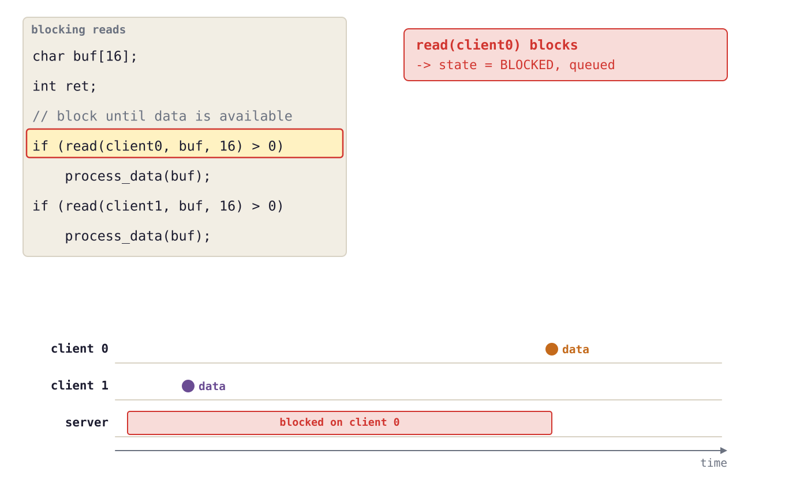</p> (<scb>running</scb> → <scb>blocked</scb> → <scb>ready</scb> → <scb>running</scb>) --- ### **blocking** reads - client 1's data arrives **early**... - ...but waits for client 0 <p>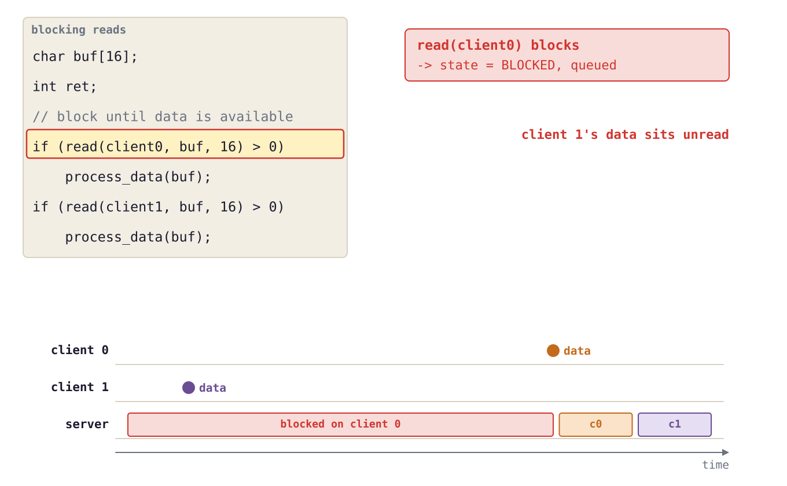</p> --- ### **blocking** reads - client 1's data arrives **early**... - ...but waits for client 0 <div class="multicolumn" style="display: grid; grid-template-columns: 60% 40%; gap: 20px; align-items: center;"> <div> </div> <div> - blocking → progress **tied** to other side! </div> </div> --- ### **non-blocking** reads ```C char buf[16]; int ret, cli0_pend = 1, cli1_pend = 1; fcntl(client0, F_SETFL, O_NONBLOCK); fcntl(client1, F_SETFL, O_NONBLOCK); while (cli0_pend || cli1_pend) { if (cli0_pend) { // won't block, even if no data ret = read(client0, buf, 16); // can return -1, errno = EAGAIN if (ret > 0) { process_data(buf); cli0_pend = 0; } } // repeat for client 1... } ``` --- ### **non-blocking** reads ```C [3-4|6|9-10|11-14|16] char buf[16]; int ret, cli0_pend = 1, cli1_pend = 1; fcntl(client0, F_SETFL, O_NONBLOCK); fcntl(client1, F_SETFL, O_NONBLOCK); while (cli0_pend || cli1_pend) { if (cli0_pend) { // won't block, even if no data ret = read(client0, buf, 16); // can return -1, errno = EAGAIN if (ret > 0) { process_data(buf); cli0_pend = 0; } } // repeat for client 1... } ``` --- ### **non-blocking** reads ```C char buf[16]; int ret, cli0_pend = 1, cli1_pend = 1; fcntl(client0, F_SETFL, O_NONBLOCK); fcntl(client1, F_SETFL, O_NONBLOCK); while (cli0_pend || cli1_pend) { if (cli0_pend) { // won't block, even if no data ret = read(client0, buf, 16); // can return -1, errno = EAGAIN if (ret > 0) { process_data(buf); cli0_pend = 0; } } // repeat for client 1... } ``` --- ### **non-blocking** reads <scb>fcntl(fd, F_SETFL, O_NONBLOCK)</scb> mark descriptors **non-blocking** <p>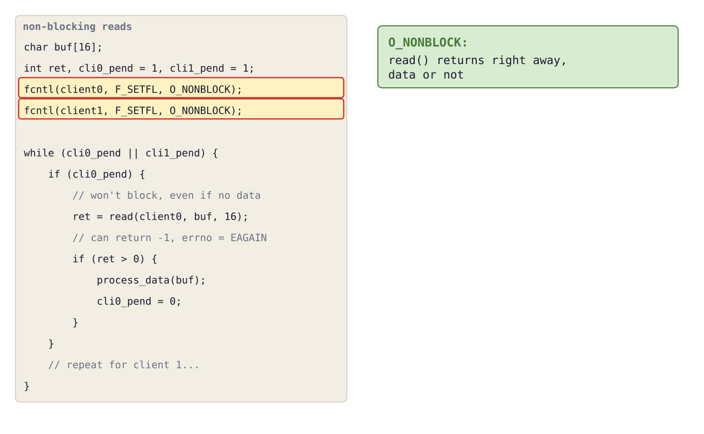</p> --- ### **non-blocking** reads - <scb>read</scb> can return **without data** - keep trying - client 1 served **first**! <p>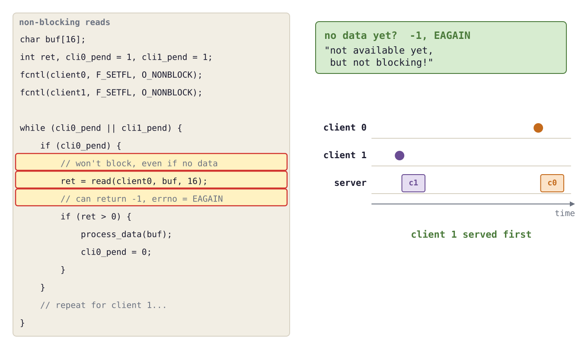</p> --- ### **non-blocking** reads - <scb>read</scb> can return **without data** - keep trying - client 1 served **first**! <div class="multicolumn" style="display: grid; grid-template-columns: 60% 40%; gap: 20px; align-items: center;"> <div> </div> <div> - non-blocking code → needs more thought </div> </div> --- what do you do when data **isn't there**? --- ### **non-blocking** reads ...but <scb>while</scb> loop **spins**, burning CPU <p>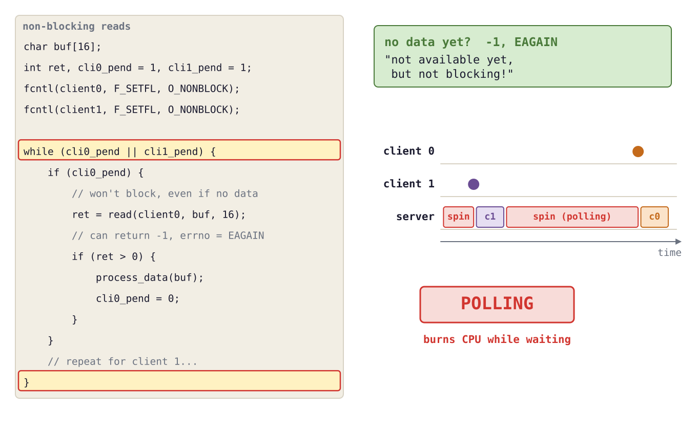</p> --- ### **non-blocking** reads ...but <scb>while</scb> loop **spins**, burning CPU <br> <center><div class="center" data-id="box" style="height: 75px; width: 300px; background: orange;"> <b>POLLING!</b> </div></center> --- how do we avoid **spinning**? --- ### polling | **fix** block on **many** descriptors at once - wake up when **any** is ready --- ### polling | **fix** block on **many** descriptors at once - wake up when **any** is ready - no spinning **and** no waiting on "wrong" client! --- ### polling | **fix** block on **many** descriptors at once - wake up when **any** is ready - no spinning **and** no waiting on "wrong" client! see [poll(2)](https://man7.org/linux/man-pages/man2/poll.2.html), [select(2)](https://man7.org/linux/man-pages/man2/select.2.html), [epoll(7)](https://man7.org/linux/man-pages/man7/epoll.7.html) --- ### polling | **property of an abstraction** we saw polling before → device drivers vs. interrupts --- ### polling | **property of an abstraction** we saw polling before → device drivers vs. interrupts - polling isn't a property of **devices** --- ### polling | **property of an abstraction** we saw polling before → device drivers vs. interrupts - polling isn't a property of **devices** - it's a property of an **abstraction** --- ### polling | **property of an abstraction** we saw polling before → device drivers vs. interrupts - polling isn't a property of **devices** - it's a property of an **abstraction** - built on **non-blocking** operations --- ### polling | **property of an abstraction** we saw polling before → device drivers vs. interrupts - polling isn't a property of **devices** - it's a property of an **abstraction** - built on **non-blocking** operations - act of **continuously checking** them --- ## blocking vs. non-blocking | **an analogy** --- handing in homework to prof... --- ### homework options | blocking vs unblocking | blocking | | | --- | --- | | **needs a timestamp** | | --- ### homework options | blocking vs unblocking | blocking | | | --- | --- | | **needs a timestamp** || | take homework to prof's office <br> knock || --- ### homework options | blocking vs unblocking | blocking || | --- | --- | | **needs a timestamp** || | take homework to prof's office <br> knock || | **block** → wait for prof to arrive/open door || --- ### homework options | blocking vs unblocking | blocking | | | --- | --- | | **needs a timestamp** || | take homework to prof's office <br> knock || | **block** → wait for prof to arrive/open door || | prof takes it, stamps it | | --- ### homework options | blocking vs unblocking | blocking | | | --- | --- | | **needs a timestamp** || | take homework to prof's office <br> knock || | **block** → wait for prof to arrive/open door || | prof takes it, stamps it | | | you **unblock** and leave | | || --- ### homework options | blocking vs unblocking | blocking | non-blocking | | --- | --- | | **needs a timestamp** | **no timestamp** | | take homework to prof's office <br> knock || | **block** → wait for prof to arrive/open door || | prof takes it, stamps it | | | you **unblock** and leave | | || --- ### homework options | blocking vs unblocking | blocking | non-blocking | | --- | --- | | **needs a timestamp** | **no timestamp** | | take homework to prof's office <br> knock | take homework to prof's office | | **block** → wait for prof to arrive/open door || | prof takes it, stamps it | | | you **unblock** and leave | | || --- ### homework options | blocking vs unblocking | blocking | non-blocking | | --- | --- | | **needs a timestamp** | **no timestamp** | | take homework to prof's office <br> knock | take homework to prof's office | | **block** → wait for prof to arrive/open door | slide it **under door** and leave | | prof takes it, stamps it | | | you **unblock** and leave | | || --- now, consider an extreme scenario... --- now, consider an extreme scenario... - <scb>10,000</scb> students - **one** prof on vacation (for a month)... --- now, consider an extreme scenario... - <scb>10,000</scb> students - **one** prof on vacation (for a month)... <br> <br> <center><div class="center" data-id="box" style="height: 75px; width: 425px; background: orange;"> <b>what happens?</b> </div></center> --- ### homework | **blocking** everyone waits at door... **forever** <p>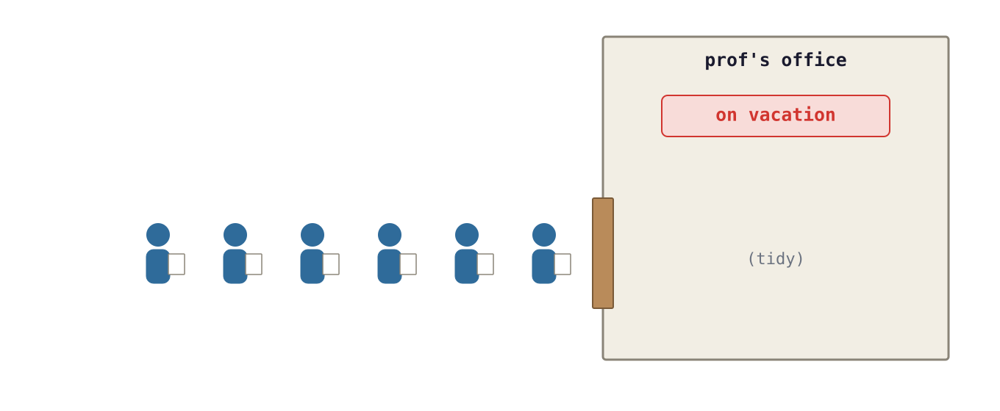</p> --- ### homework | **blocking** everyone waits at door... **forever** <div class="multicolumn" style="display: grid; grid-template-columns: 60% 40%; gap: 20px; align-items: center;"> <div> </div> <div> - office is fine - but **your** progress tied to prof's! </div> </div> --- ### homework | **non-blocking** nobody waits... but office **overflows** <p>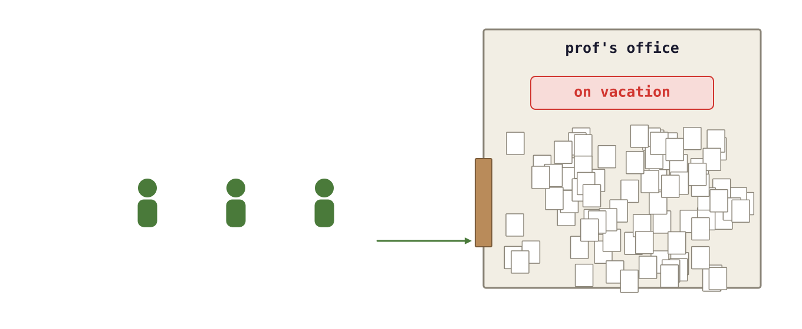</p> --- ### homework | **non-blocking** nobody waits... but office **overflows** <div class="multicolumn" style="display: grid; grid-template-columns: 60% 40%; gap: 20px; align-items: center;"> <div> </div> <div> - just like kernel buffering **every** send - out of memory! </div> </div> --- ### blocking vs. non-blocking | **not just IPC** --- ### blocking vs. non-blocking | **not just IPC** - applies to **I/O requests** too - _e.g._ <scb>read</scb> from network connection --- what if packet **never** arrives? --- what if packet **never** arrives? ||| | --- | --- | | **blocking** | wait for packet... **forever** | --- what if packet **never** arrives? ||| | --- | --- | | **blocking** | wait for packet... **forever** | | **non-blocking** | keep checking... **forever** | || --- ## communication summary --- ### communication summary ||| | --- | --- | | IPC **enables** | | --- ### communication summary ||| | --- | --- | | IPC **enables** | process **coordination** | --- ### communication summary ||| | --- | --- | | IPC **enables** | process **coordination** <br> **security** via process isolation (browsers, microkernels) | --- ### communication summary ||| | --- | --- | | IPC **enables** | process **coordination** <br> **security** via process isolation (browsers, microkernels) <br> use of **concurrency/parallelism** | --- ### communication summary ||| | --- | --- | | IPC **enables** | process **coordination** <br> **security** via process isolation (browsers, microkernels) <br> use of **concurrency/parallelism** | | IPC **mechanisms** | | --- ### communication summary ||| | --- | --- | | IPC **enables** | process **coordination** <br> **security** via process isolation (browsers, microkernels) <br> use of **concurrency/parallelism** | | IPC **mechanisms** | message passing (**copying**) <br> **shared memory** | --- ### communication summary ||| | --- | --- | | IPC **enables** | process **coordination** <br> **security** via process isolation (browsers, microkernels) <br> use of **concurrency/parallelism** | | IPC **mechanisms** | message passing (**copying**) <br> **shared memory** | | communication **APIs** | **blocking/synchronous** vs. <br> **non-blocking/asynchronous** | || --- **next topic** → threads